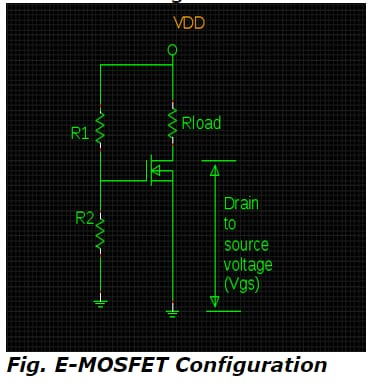

«
Electronics &
Telecommunication
Microcontroller 8051
Principle of
Communication
»
Electronics And Telecommunication Quiz
Easy Questions
1. What is the major functioning role of VVR in the multistage AGC amplifier circuit during an increment in the signal level?
- Published on 30 Oct 15
a. Variation in control of input signal level
b. Variation in voltage gain of multistage amplifier
c. Variation in current gain of multistage amplifier
d. Variation in control of output signal level
2) The rectified & filtered signal taken at a high level point in AGC amplifier generates ___.
- Published on 30 Oct 15
a. dc voltage proportional to the level of an output signal
b. dc voltage proportional to the level of an input signal
c. ac voltage proportional to the level of output signal
d. ac voltage proportional to the level of an input signal
3) How does the FET operate before the pinch-off region with small value of drain-to-source voltage in accordance to the control of drain-to-source resistance by the bias voltage?
- Published on 30 Oct 15
a. As a Voltage Controlled Resistor
b. As a Voltage Dependent Resistor
c. As a Voltage-Variable Resistor
d. All of the above
4) How are the zener diodes placed internally in MOSFETs so as to provide defence from the hazardous consequences of stray voltages?
- Published on 30 Oct 15
a. Alternately
b. Opposite to each other
c. Back-to-back
d. All of the above
5) FETs are widely applicable in oscilloscopes and voltmeters as an input amplifier as compared to bipolar transistors due to __.
- Published on 30 Oct 15
a. ability of minimizing the loading effect with high input resistance
b. ability of maximizing the loading effect with high input resistance
c. ability of minimizing the loading effect with low input resistance
d. ability of maximizing the loading effect with low input resistance
Submit
Medium Questions
1. Which mode is produced by a positive swing in gate-to-source voltage by input ac signal with the maximum voltage drop across load resistor in DE-MOSFET amplifier circuit?
- Published on 30 Oct 15
a. Depletion mode with decrease in drain current
b. Enhancement mode with decrease in drain current
c. Depletion mode with an increase in drain current
d. Variation in control of output signal leved. Enhancement mode with an increase in drain current
2.What is the computational the value of drain current for gate-to-source voltage (VGS) of about 6V in the below drawn schematic diagram of E-MOSFET along with ID(ON) = 2mA at VGS and VGS(threshold) of about 12V and 4V respectively?
- Published on 30 Oct 15

a. 1 Ma
b. 2 Ma
c. 3 Ma
d. 4 Ma
3. How is the layer of P-substrate, that intimate the provision of channel for electrons by touching substrate to metal -oxide film with the semantic behaviour of N-channel, can be referred as?
- Published on 30 Oct 15
a. N-type Inversion layer
b. P-type Inversion layer
c. Both a and b
d. None of the above
4. The input current of JFET and MOSFET are basically the leakage currents of __ and __ respectively
- Published on 30 Oct 15
a. forward-biased PN junction and capacitor
b. reversed-biased PN junction and capacitor
c. forward-biased PN junction and inductor
d. reversed-biased PN junction and inductor
5. Which action plays a significant role in enhancing the conductivity of channel by inducing the free electrons especially in enhancement mode of N-channel MOSFET?
- Published on 30 Oct 15
a. Inductor action
b. Capacitor action
c. Resistive action
d. Filter action
Submit
Hard Questions
1. The operation of De-MOSFET under the application of positive gate is also known as ____.
- Published on 30 Oct 15
a. Depletion mode
b. Enhancement mode
c. Depletion-Enhancement mode
d. None of the above
2.The depletion mode of MOSFET resemble semantically in the behaviour of JFET due to copious increase in __.
- Published on 30 Oct 15
a. negative gate voltage by reducing its conductivity level
b. negative gate voltage by enhancing its conductivity level
c. negative source voltage by reducing its conductivity level
d. negative source voltage by enhancing its conductivity level
3. Which property of MOSFET distinguishes it from JFET regarding to voltage application in addition to operational strategies and mechanisms?
- Published on 30 Oct 15
a. Provision of applying positive and negative voltages to gate being insulated from channel
b. Provision of applying only positive voltage to gate to E-MOSFET
c. Provision of applying only negative voltage to gate to DE-MOSFET
d. All of the above
4. The enhancement type basically termed as normally-OFF MOSFET works only with ___.
- Published on 30 Oct 15
a. large positive gate voltage
b. large negative gate voltage
c. large positive drain voltage
d. large negative drain voltage
5. Which MOSFET allows the flow of drain current even with zero gate to source voltage just due to existence of channel between drain and source terminals?
- Published on 30 Oct 15
a. Depletion MOSFET
b. Enhancement MOSFET
c. Depletion-Enhancement MOSFET
d. All of the above
Submit